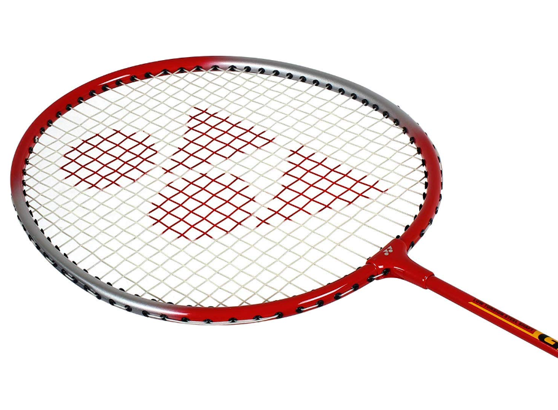
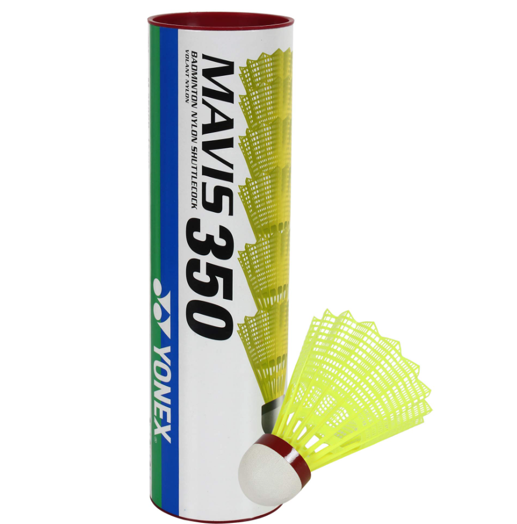
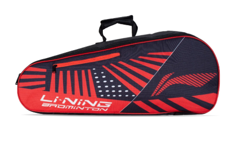
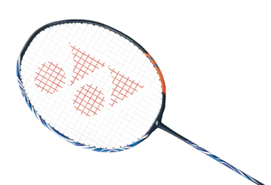
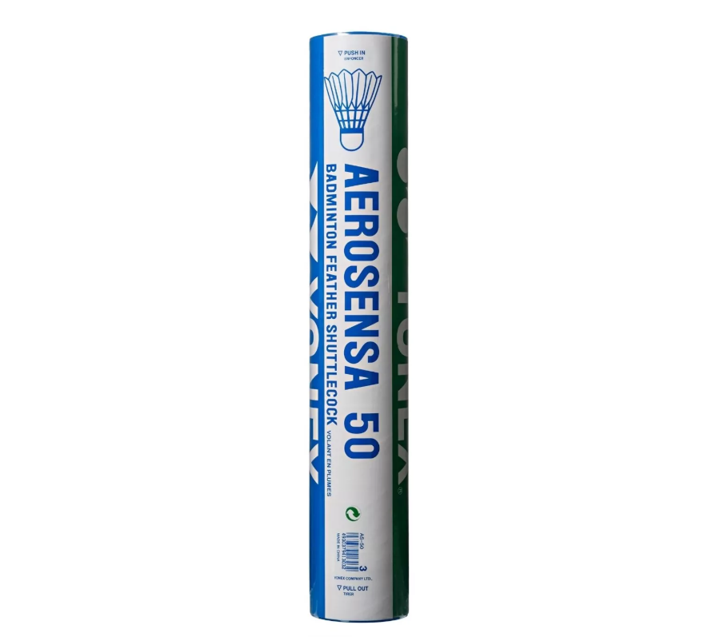
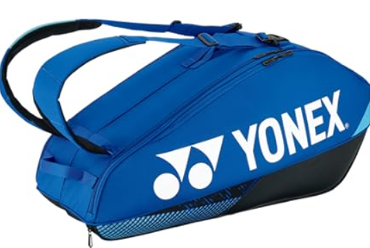

RECOMMENDATION
Beginner

1. Racket
Yonex GR 303 Aluminum Badminton Racket
A lightweight, durable racket ideal for learners. Made with an aluminum frame that's easy to handle and forgiving for developing control. Commonly priced around AED 60–80.
2. Shuttlecock (Cork)
Yonex Mavis 350 Nylon Shuttlecock
Made of nylon with a cork base — great for practice sessions. More durable and consistent than feather shuttles, perfect for beginners. Often comes in tubes of 6, available in different speeds.


3. Kit Bag
Li-Ning ABJP058 Kit Bag
A simple, affordable badminton bag for carrying a racket, shuttlecocks, and water bottle. Offers basic protection and portability for beginners just starting out.
Professional

1. Racket
Yonex Astrox 100 ZZ
A high-end graphite racket used by many international players. Stiff shaft and head-heavy balance allow for powerful, controlled smashes. Designed for advanced players with strong technique.
2. Shuttlecock (Cork)
Yonex Aerosena 50 Feather Shuttlecock
Tournament-grade goose feather shuttle with precise flight and feel. Used in official competitions worldwide; offers the most accurate performance.


3. Kit Bag
Yonex Pro Racquet Bag 92226EX (6-Pack)
A premium bag with thermal lining to protect rackets from temperature changes. Spacious compartments for rackets, clothing, shoes, and accessories — ideal for professional players on the move.